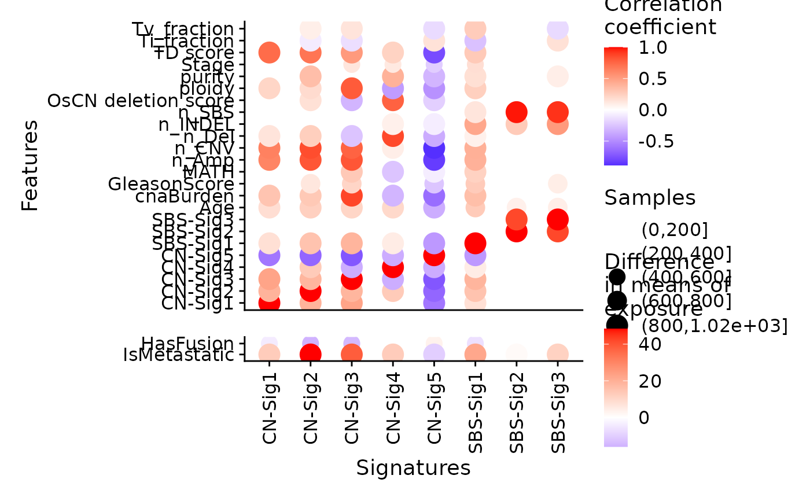

R/show_sig_feature_corrplot.R
show_sig_feature_corrplot.RdThis function is for association visualization. Of note,
the parameters p_val and drop will affect the visualization
of association results under p value threshold.
show_sig_feature_corrplot(
tidy_cor,
feature_list,
sort_features = FALSE,
sig_orders = NULL,
drop = TRUE,
return_plotlist = FALSE,
p_val = 0.05,
xlab = "Signatures",
ylab = "Features",
co_gradient_colors = scale_color_gradient2(low = "blue", mid = "white", high = "red",
midpoint = 0),
ca_gradient_colors = co_gradient_colors,
plot_ratio = "auto",
breaks_count = NULL
)data returned by get_tidy_association.
a character vector contains features want to be plotted. If missing, all features will be used.
default is FALSE, use feature order obtained from the previous
step. If TRUE, sort features as feature_list.
signature levels for ordering.
if TRUE, when a feature has no association with all signatures
(p value larger than threshold set by p_val), this feature will be removed
from the plot. Otherwise, this feature (a row) will keep with all blank white.
if TRUE, return as a list of ggplot objects.
p value threshold. If p value larger than this threshold, the result becomes blank white.
label for x axis.
label for y axis.
a Scale object representing gradient colors used to plot for continuous features.
a Scale object representing gradient colors used to plot for categorical features.
a length-2 numeric vector to set the height/width ratio.
breaks for sample count. If set it to NULL,
ggplot bin scale will be used to automatically determine the
breaks. If set it to NA, aes for sample will be not used.
a ggplot2 object
# \donttest{
# The data is generated from Wang, Shixiang et al.
load(system.file("extdata", "asso_data.RData",
package = "sigminer", mustWork = TRUE
))
p <- show_sig_feature_corrplot(
tidy_data.seqz.feature,
p_val = 0.05,
breaks_count = c(0L,200L, 400L, 600L, 800L, 1020L))
#> Warning: There were 2 warnings in `dplyr::mutate()`.
#> The first warning was:
#> ℹ In argument: `gg = purrr::map2(.data$data, .data$type, .plot_cor)`.
#> ℹ In group 1: `type = "ca"`.
#> Caused by warning:
#> ! Using size for a discrete variable is not advised.
#> ℹ Run `dplyr::last_dplyr_warnings()` to see the 1 remaining warning.
p

# }